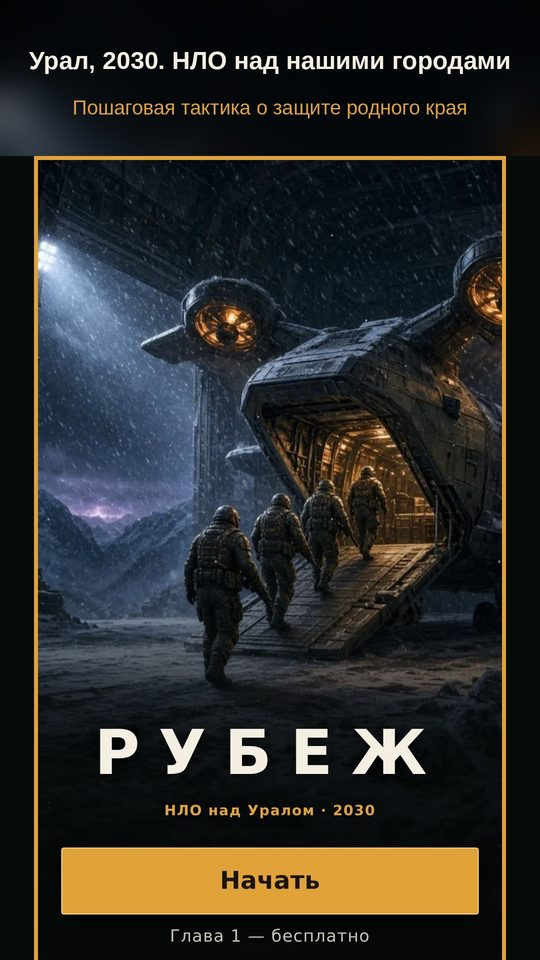
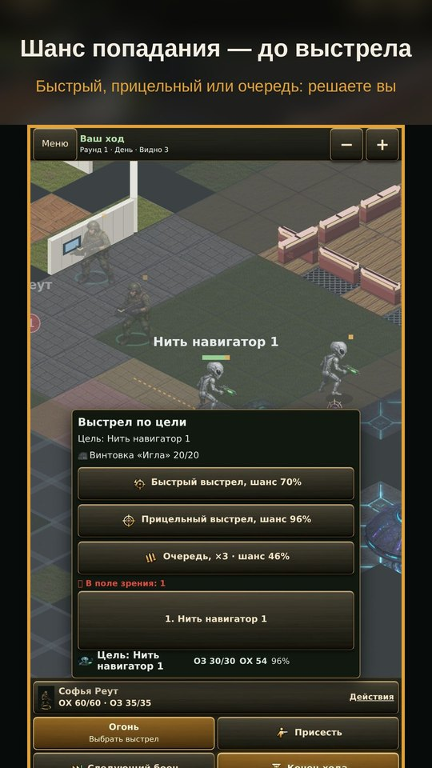
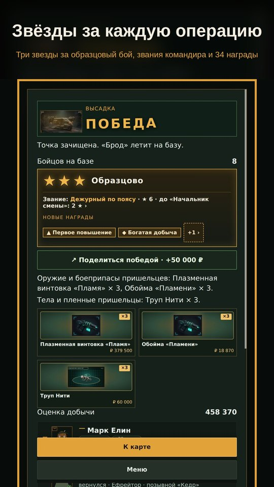
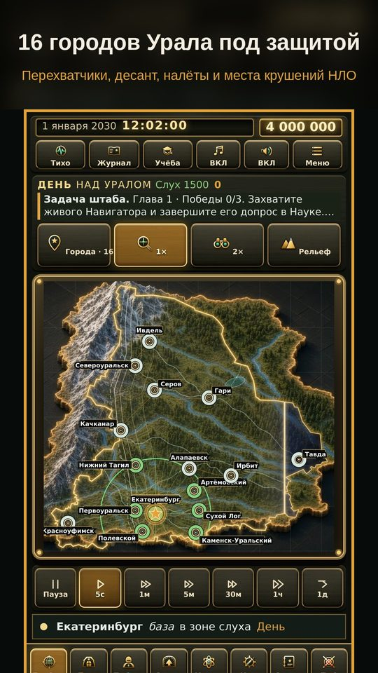
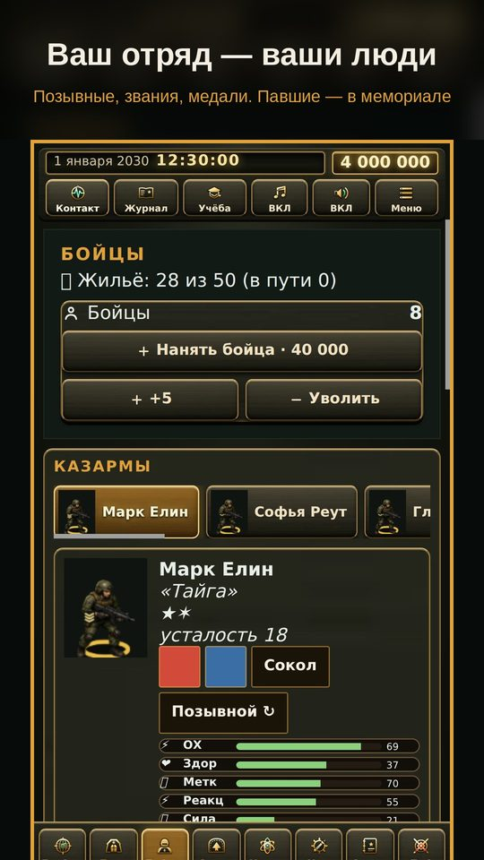
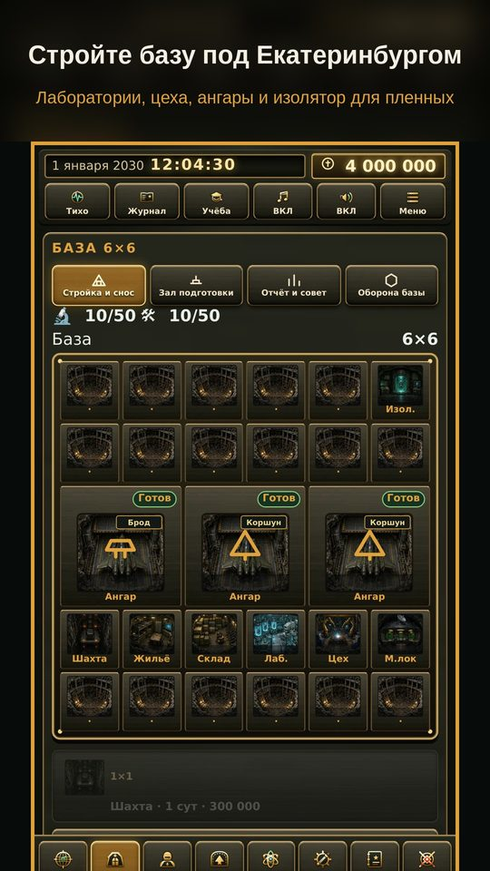
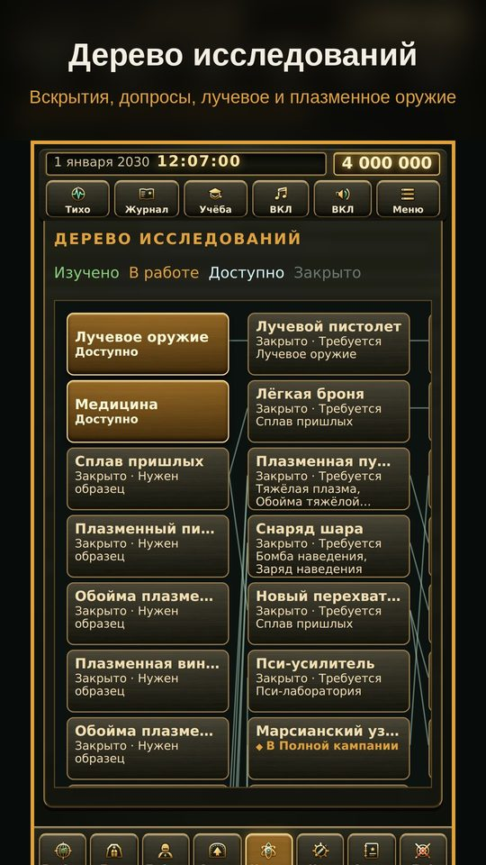
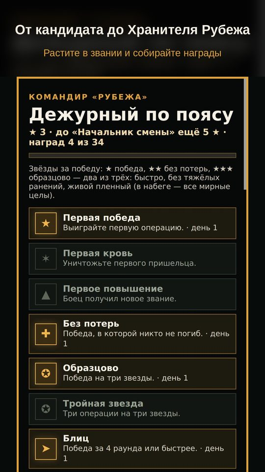
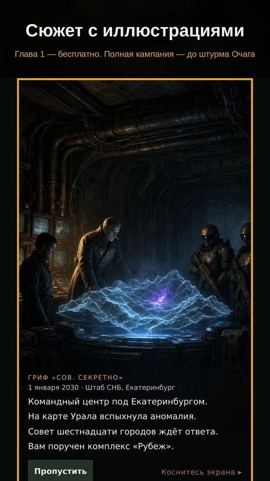

Рубеж: НЛО над УраломПошаговая тактика для Android · Урал, 2030
Зима 2030 года. Над Уральским хребтом — неопознанные цели, северные города замолкают один за другим. Под Екатеринбургом разворачивают секретный подземный комплекс «Рубеж». Вам защищать 16 городов Свердловской области.
Скачать в RuStoreГлава 1 — бесплатно. «Полная кампания» — разовая покупка 699 ₽ (цена запуска, затем 990 ₽), без рекламы и без подписки.

Что за игра
«Рубеж» — пошаговая тактика про вторжение НЛО в духе классических тактик 90-х, сделанная для телефона. Днём вы командуете базой: строите лаборатории и ангары, нанимаете бойцов и учёных, следите за картой области. Когда пришельцы садятся у города, отряд вылетает на «Броде» — и начинается бой: укрытия, очки хода, прицельные выстрелы, гранаты, ночные операции с фонарями.
Каждый боец — живой человек со своим позывным, званием и ранами. Павшие остаются в мемориале. Пришельцев можно оглушить и взять живыми: допросы навигаторов и командиров ведут к главной базе пришлых — Очагу. Играть можно без интернета, сохранения хранятся на телефоне.
Возможности
- Бои в изометрии. Укрытия, очки хода, шанс попадания на каждом выстреле, гранаты, дым, ночные операции.
- 16 реальных городов. Нижний Тагил, Каменск-Уральский, Серов, Ирбит, Ивдель, Тавда и другие — на карте Свердловской области.
- Бойцы с позывными. «Тайга», «Исеть», «Полоз», «Огневушка»… Звания, медали, ранения и мемориал павших.
- База и наука. База 6×6 под Екатеринбургом, лаборатории, цех, изолятор для пленных, дерево исследований.
- Звёзды и звания. До трёх звёзд за операцию, звание командира и 34 награды. Победой можно поделиться в мессенджере.
- Без интернета и без таймеров. Никакой энергии и ожидания. Сюжет с иллюстрациями, три уровня сложности и режим «Железный человек».
Скриншоты








Сколько стоит
| Бесплатно | «Полная кампания» |
|---|---|
| Вся глава 1 «Первый контакт»: бои, база, наука, сюжет. Реклама — только в бесплатной части, не чаще раза в 10 минут после успешной операции. | Все операции после главы 1: гнёзда пришлых, налёты на их базы, допросы командиров и решающий штурм Очага. Без рекламы навсегда. Разовая покупка 699 ₽ (цена запуска, затем 990 ₽), восстанавливается на новом телефоне. |
Скоро
Обновление 1.2: спецоперации за пределами Урала — Москва, Санкт-Петербург, Владивосток, Норильск и даже Антарктида.
Вопросы
Нужен ли интернет?
Играть можно без интернета: сохранения хранятся на телефоне. Интернет нужен только для покупки и рекламы.
Есть ли донат, энергия и таймеры?
Нет. Ни энергии, ни таймеров ожидания. Одна разовая покупка «Полная кампания» открывает всю игру и навсегда отключает рекламу.
Что бесплатно, а что платно?
Глава 1 «Первый контакт» бесплатна целиком: бои, база, наука, сюжет. «Полная кампания» — все операции после главы 1 и штурм Очага — одной покупкой.
На каких телефонах работает?
На Android 8.0 и новее. Игра скачивается из RuStore.
Чем «Рубеж» отличается от других тактик?
Свой уральский сеттинг: 16 реальных городов Свердловской области, бойцы с позывными из уральских рек и сказов Бажова, мемориал павших, звёзды и звания командира.
Покупка пропала после переустановки?
Меню → «Полная кампания» → «Восстановить покупку». Нужен тот же аккаунт RuStore.